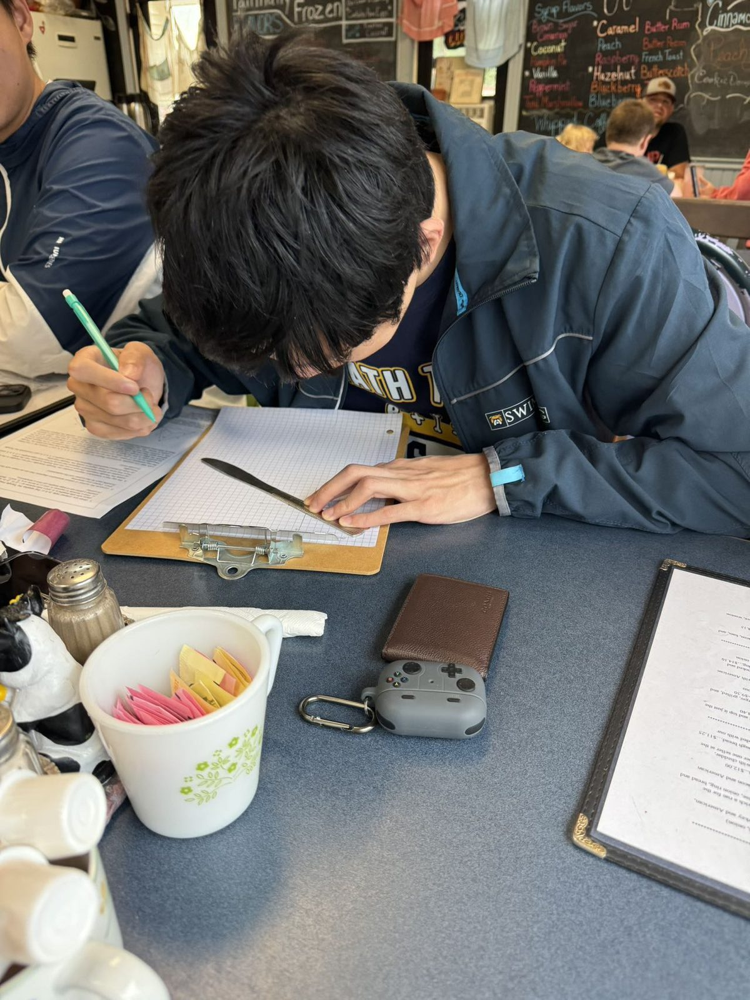
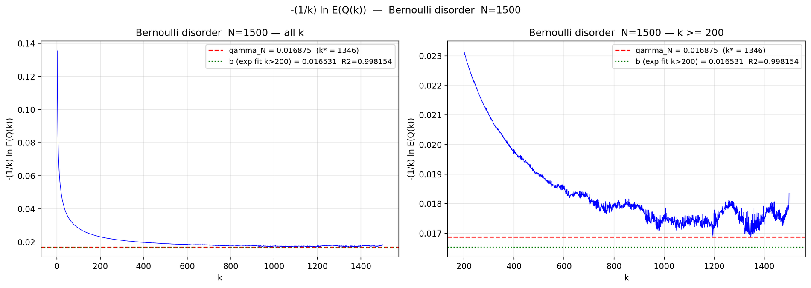

Works
The mathematics I’ve written up carefully, and the books, models, and projects around it.
On this page.Over the course of the past 6-7 years, I'd like to say I've significantly improved my ability in writing something up. I've learned a ton about \(\LaTeX\) and the iPe extensive drawing editor, and I've put them to good use. Growing up doing mostly olympiad mathematics, I've naturally grown used to problems with a definite answer -- whether it be proving a result known to be true or solving a numerical problem. But the beauty of this page lies in the mathematical unknown. Many of the things I do today, from research to lecture notes to teaching, have no "right way" of doing it. But I still end up doing it anyway -- and not just doing it, but I truly enjoy doing it. In fact, I'd gladly let it take up most of my day.

Publication · Advances in Nonlinear Analysis
Measuring Localization in the One-Dimensional Anderson Model. Alexander B. Chen, Emily Mei, Neev Shaw, Yiding Max Tang, Sebastian Vargas Loaiza, Xueyin Wang through the PReMa program with Texas A&M. Advances in Nonlinear Analysis
A quantum particle on the lattice \( \mathbb{Z} \) is governed by the discrete Schrödinger operator \( H_\omega = \Delta + V_\omega \), with the potential \( V_\omega(n) \) drawn i.i.d. at each site. Turning on that disorder does something dramatic: eigenstates that would otherwise spread across the whole line become exponentially localized. This project answers the quantitative question, not just that states localize but how fast, and with what guaranteed error.
I work with the eigenfunction correlator \( Q(k) \), which controls transport, and estimate the localization rate from a finite-volume model. The main analytic statement is that the empirical mean of \( -\tfrac{1}{k}\log Q(k) \) concentrates around the true rate \( \gamma \) with a Hoeffding-type bound: for \( M \) disorder samples,
\[ \mathbb{P}\!\left( \big|\hat\gamma_k - \gamma\big| \ge \varepsilon \right) \le 2\,e^{-c M \varepsilon^2}, \]so the sample size for a target accuracy is fixed in advance rather than hoped for afterward, and it is the sample count, not the lattice size, that sets the error.

Numerically I estimate the rate across Bernoulli, discrete-uniform, and continuous-uniform disorder. The eigenproblem is tridiagonal, so I never build the dense matrix, and I parallelize over the independent disorder configurations to reach \( N = 1500 \) with enough samples for the error bars above. The singular Bernoulli case sits at the edge of the theory, and the Monte Carlo bound is exactly what keeps it honest.
MathFest poster arXiv · under review
Most of what I write is meant to be handed to a student who is one insight away. Some of it is a full book; some is a lecture series for the math team.
Manuscript · inequalities & analysis
A Sharp Piecewise Generalization of Nesbitt’s Inequality. Solo manuscript, refined through referee-style review rounds.
Nesbitt’s inequality says that for positive \( a,b,c \),
\[ \frac{a}{b+c} + \frac{b}{c+a} + \frac{c}{a+b} \;\ge\; \frac{3}{2}, \]with equality at \( a=b=c \). Raise each term to a power, replacing the sum by \( \sum \left(\tfrac{a}{b+c}\right)^{\alpha} \), and ask what the sharp lower bound becomes as a function of \( \alpha \). The answer isn’t one smooth formula: for small \( \alpha \) the symmetric point stays optimal, while past a threshold the extremum jumps to a boundary configuration. That threshold, a genuine phase transition in the sharp constant, lands exactly at
\[ \alpha^\star = \log_2 \tfrac{3}{2} \approx 0.585. \]The paper establishes the sharp constant piecewise on each side of \( \alpha^\star \) and proves the crossover is where the two regimes meet. It’s the result I’m fondest of: an olympiad-flavored inequality that hides a clean transition once you let it vary.
Manuscript · discrete & combinatorial geometry
Acute Triangulation of Obtuse Triangles: A Constructive Geometric Approach.
Any polygon can be cut into triangles; requiring every piece to be acute is much harder, and for a single obtuse triangle it isn’t obvious it can be done at all. Motivated by a deliberately silly picture, a child who will only eat an obtuse cookie in acute-triangle bites, the paper proves that every obtuse triangle admits a triangulation into either seven or eight acute triangles.
The construction is explicit: drop the incenter, its angle bisectors, and perpendicular projections, then add a circle through the obtuse vertex, and verify each resulting piece is acute using congruence, symmetry, and angle inequalities. A short lemma handles the leftover near-right and very-obtuse cases, which is where the eighth triangle can appear. The method is universal rather than minimal, and I discuss where fewer pieces might be possible.
Manuscript · discrete & combinatorial geometry
Maximizing the Area of Polygons with Fixed Perimeter: The Regular Polygon.
Among all simple \( n \)-gons with a fixed perimeter \( P \), which encloses the most area? The intuitive answer, the regular one, is true, and this paper proves it from the ground up. The engine is a lemma about a triangle inscribed in a circle: if two of its sides are unequal, sliding the odd vertex along the arc toward the perpendicular bisector strictly increases the area while fixing the base. Iterated, that forces a cyclic polygon to be regular to be optimal.
Extending past the cyclic case uses the isoperimetric inequality and a convexity argument on \( \sin \), giving the clean bound
\[ S \;\le\; \frac{P^2}{4n}\,\cot\!\left(\frac{\pi}{n}\right), \]with equality exactly for the regular \( n \)-gon. Letting \( n \to \infty \) recovers \( S \to P^2/4\pi \), the circle, so the discrete result sits underneath the classical continuous one as a special case.
Take something messy from the real world, decide what actually matters, and write down the smallest model that still behaves like the thing.
Videos, essays, and side- projects, usually an attempt to explain something the moment after it finally made sense.